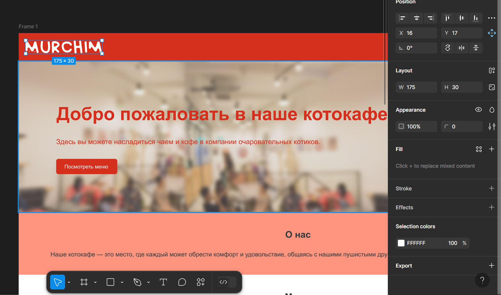

модуль 5. практика верстки
Представим, что вы уже на работе. Как разобрать с макетами в figma и создать сайт с нуля? Ответы на эти вопросы в модуле!
Представим, что вы уже на работе. Как разобрать с макетами в figma и создать сайт с нуля? Ответы на эти вопросы в модуле!
Давай рассмотрим макет сайта для котокафе:
Выглядит неплохо. У него четкая структура, благодаря которой пользователь сможет легко ориентироваться по сайту, а также этот макет легко адаптировать под любые устройства, но на самом деле информации маловато.
Давай попробуем сверстать этот сайт, но сначала нам нужно разобраться с макетом. Макет можно скопировать к себе в черновики, чтобы случайно не испортить готовую работу.
Перейди по этой ссылке чтобы открыть макет. Здесь нас встречает наш будущий сайт, но пока что в виде картинки:
Чтобы скопировать макет к себе в черновики, тебе нужно нажать на стрелочку справа от названия и выбрать “Dublicate to your drafts”.
После этого у тебя откроется файл с копией нашего проекта. Теперь ты можешь копировать и изменять любые объекты в макете, не опасаясь за исходник.
Вообще сейчас ты можешь попробовать самостоятельно сверстать сайт по макету, но на всякий случай ниже можно посмотреть подсказки с кодом.
Теперь пропишем структуру нашего сайта:
Перейдем к остальным разделам сайта:
Осталось создать галерею и форму:
Посмотрим на наш промежуточный результат:
Ну, пока что не особо красиво, да и фоток нет... Давай посмотрим как их скачивать:
В figma выбери нужную тебе фотографию и нажми на неё. После этого справа откроется меню:
Нажми на кнопку Export и сохрани фото к себе на компьютер:
Отлично, теперь эти картинки можно вставить в наш сайт! А теперь пропишем стили:
Добавим изображение на фон:
Теперь зададим стили для каждого раздела:
Ну и закончим на подвале и адаптиве:
Посмотрим на результат:
Ура! полное совпадение!
DevTools — это инструмент, который есть в браузере (нажми правую кнопку мыши на странице и выбери "Исследовать элемент"), где ты можешь:
Сегодня мы хорошо постарались и сделали большую работу. Помни, что с каждым проектом верстка будет даваться тебе всё легче!